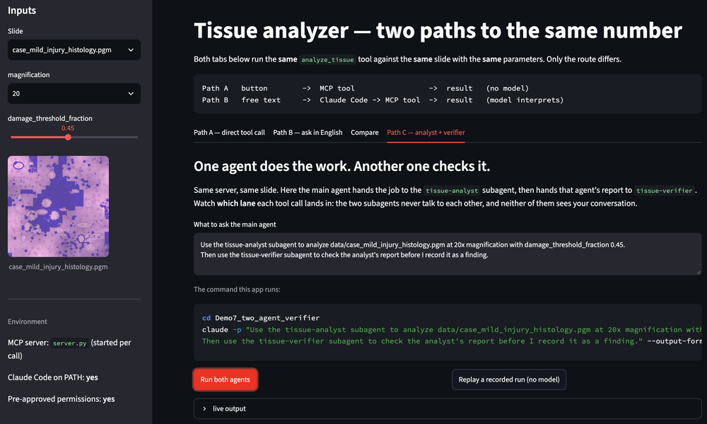

What this is for
Demos 1–4 turn one analysis package into an agent-ready system. Demo 5 takes the same package somewhere your own research might need to go: behind a user interface. It still runs the identical tissue analysis on the identical slides, so anything that changes is the packaging and not the science.
Demo 6 goes the other way. Every demo so far handed you a package someone had already prepared — the tool named, the arguments chosen, the legal values decided. That is the part of the work the course has been quietly doing for you. Demo 6 takes it away and gives you a research project in the state real projects are actually in.
| If your project is… | Start from |
|---|---|
| A research workflow exposed as a capability | Demos 1–4 — define the inputs, ranges, outputs and permissions for one thing you already run. |
| A workflow plus a user-facing application | Demo 5 — a form and a text box over the same server, and an explicit answer to which one each control should be. |
| Code you already have, not yet agent-ready | Demo 6 — four prompts that take an existing script and produce the card, schema, server and agent instructions, on code nobody prepared for you. |
| A result somebody will act on | Demo 7 — what a checking agent must be allowed to see, and why the careful version of it confirms a wrong answer. |
| A field with a real oracle | Demo 9 — formal proof: what an unarguable checker does and does not settle. |
| Reading, notes and your own documents | Demo 10 — a vault of papers, clips and a spreadsheet, and what stops the notes an agent writes from being wrong. |
| A literature review or a reference library | Demo 11 — a Zotero library whose three views disagree, and a bibliography checked claim by claim against the PDFs. |
| Still deciding the shape | Demo 8 — workflow or agent, and where each named pattern fails. |
| A workflow on a cluster or a long queue | Not covered by a package. The shape is the same: a tool that submits and returns a job id, and an agent that asks about it later rather than waiting. Demo 6 says how to ask for that. |
More complicated is not better. A Level 1 project done carefully — clear parameters, real validation, honest reporting of what the tool is unsure about — is worth more than a cluster integration that nobody can reproduce. Pick the shape that matches the work you actually do.
The packages
Streamlit research app — the same analysis, two routes
A web front end over the Demo 2 MCP server, built to make one distinction visible.
What you will do
- Run the analysis from a form — no language model anywhere in the round trip.
- Widen the slider past the legal range and watch the server refuse what the form allowed.
- Ask for the same thing in English and watch Claude Code convert
20xand45%into valid arguments. - Watch the tool calls stream in live — what it did, not what it says it did.
- Delete one line from
settings.jsonand see the request quietly do less than you asked.
What it teaches
- A button means you decided at design time; a text box means the model decides at run time.
- Validation belongs where the work happens, not in the widget.
- In
-pmode nothing can answer a permission prompt, so an unapproved tool is simply skipped — silently.
ZIP · Python 3 · Streamlit. Same server and slides as Demo 2.

Bring your own project — from existing research code to an agent-ready capability
An unprepared project in someone else’s field, and four prompts that turn it into what Demo 2 handed you.
What you will do
- Open a 1-D heat diffusion project you have never seen: one script that works, a README that is partly wrong, and a notes file.
- Have Claude Code inspect it and change nothing — and catch the three places the documentation and the code disagree.
- Design the contract before any code is written, and supply the one rule the repository does not contain.
- Build the capability card, schema, MCP server and
CLAUDE.md— wrapping the science, not rewriting it. - Ask for the ordinary optimisation — “same total time, ten times fewer steps” — and watch it pass a short test and fail a long one.
What it teaches
- An agent can write the schema, the server and the docs. It cannot know that
r = α·dt/dx²must stay under 0.5 — that is not in the code. Someone with the expertise has to say so. - An unstable run still exits 0 and still writes a tidy CSV. Validation before execution is worth more than a check afterwards.
- A short test is not evidence: the bad configuration is off by 0.17°C after 20 seconds and by 1026 after 200.
- Where Cowork is the better tool and where Claude Code is — and how to run the same four prompts on Python, R, MATLAB, a cluster job or a notebook.
ZIP · Python 3, standard library only. No Streamlit, no new installs.
Bring your own code instead. The four prompts in
prompts/ are written to be copied onto your own project — the heat
equation is only there so everyone fails in the same, visible way first.
Two agents — an analyst and a verifier
A second subagent whose only job is to disbelieve the first one — and the discovery that most checkers do not.
What you will do
- Add a
tissue-verifiersubagent beside Demo 4's analyst, and give it the analyst’s report to check. - Run the fold-artifact slide and watch the verifier confirm the wrong answer, confidently.
- Work out why: it re-asked the model instead of checking the measurement.
- Rewrite it to check the report’s claims against the JSON on disk — and watch the same slide get caught.
- See the trace split into lanes — main agent, analyst, verifier — in the app’s Path C tab.
What it teaches
- Subagents do not talk to each other. The main agent passes an artifact between them — which is the real reason results are written to disk.
- A checker that shares the worker’s blind spot returns “confirmed”. Voting reduces variance, not bias.
- A check only helps if it can fail differently from the thing it checks — so the strong model belongs on the check, not only on the work.
- Verifier, referee and vote are three different instruments, and they are not interchangeable.
ZIP · Python 3 · Streamlit optional. Demo 5’s app and server, plus two subagents and a third MCP tool.
Runs without Claude Code. The app’s Path C tab has a Replay button that renders a recorded two-agent run with real tool numbers — no tokens, useful in a lecture.
Prompted by a question from Prof. Myryam about how to check accuracy, and by Michael Murillo’s suggestion of an adversarial checker.

Agentic design patterns
The named shapes — chaining, routing, parallelisation, orchestrator-workers, evaluator-optimiser — taught against code you have already run.
What you will do
- Put each pattern next to a demo you already have: Demo 1→2 is prompt chaining, Demo 4 is orchestrator-workers, Demo 7 is evaluator-optimiser.
- Decide, for your own project, whether you need an agent at all or a workflow — a fixed sequence of steps with a model inside it.
- Work through where each pattern fails, and what it costs in latency and tokens.
What it teaches
- Most research work wants a workflow, not an agent. Patterns are for deciding which, not for collecting.
- Elaboration usually arrives in the wrong place: more agents doing the work, still nobody checking it.
- A vocabulary for describing your design to a collaborator — and for reading other people’s.
A page, not a download. The patterns land better against code you recognise than as another package.
Built on:
Building effective agents (Anthropic)
Agentic design patterns (DeepLearning.AI)
The eight design questions in Demo 4 §2A are a first pass at this.
Lean proof agent — an oracle, and what it cannot tell you
A checker that cannot be argued with, paired with one that can — because the first one still will not tell you the proof wandered.
What you will do
- Read three proofs of one theorem: the route a mathematician chose, a skeleton with
sorryholes, and a valid proof that took fifteen steps instead of three. - Run a shape checker — no Lean, no model, no tokens — and watch the detour score 5.0× its budget.
- Find the failure that matters: the intermediate statement the mathematician cared about has vanished from a proof Lean accepts.
- Give an agent one hole at a time, so it fills the argument rather than choosing it.
- Run the evaluator–optimiser loop in the one setting where it genuinely converges.
What it teaches
- Two checkers, two jobs.
lake buildanswers is it a proof?; a contract you wrote answers is it THE proof? Neither replaces the other. - Mathematics gets an oracle almost no other field has — and still needs the weak, hand-written check to get the answer it wanted.
- You cannot prompt your way out of a search problem. Constrain the route, then measure the shape.
- A detour is sometimes information: the direct step may want a lemma that does not exist yet.
ZIP · Python 3 · Lean 4, core only (no Mathlib). Streamlit optional.
The shape checker needs no Lean at all — it is pure Python, so the main result is reproducible before anyone installs a toolchain.
The Lean half is unverified. It was written without a Lean toolchain available; lake build has not been run. Please report what breaks.
Lean is reached through lean-lsp-mcp, a separate project. Prompted by a question from a mathematics attendee about proofs that take the wrong route.
Claude Code + Obsidian — a vault that changes its mind
Ten documents of the kind that actually pile up, seven of them quietly wrong — then two more that arrive later and make an earlier conclusion out of date.
What you will do
- Point Claude Code at an Obsidian vault with no plugin, no API key and no MCP — a vault is a folder of Markdown, so there is nothing to connect.
- File one paper and compare the note against the PDF: two numbers in that abstract do not follow from its own table.
- Process an inbox holding a preprint, a photocopied scan with no text layer, a clipped page that stops at “Subscribe”, and a spreadsheet in the wrong units.
- Run a
skepticsubagent with noWritetool over the notes the first agent just wrote. - Ask the vault a question that can only be answered by connecting three documents — and see whether the notes are good enough to support it.
- Then run
curator: which topic note does this change, what does it contrast with, what gap does it open? It writes a proposal — the exact lines to add and remove — and cannot touchtopics/at all. - Drop in two documents that arrive later and make an existing conclusion out of date, then ask the same question again. Same vault, better answer.
What it teaches
- The same three layers, on something you own.
CLAUDE.mdasks,settings.jsonenforces, a missing tool removes the option — here applied to a year of your own notes rather than a demo folder. - A verifier that can edit is a verifier you cannot trust. It can make its own findings disappear.
- An abstract is a claim; the tables are the evidence. Most of the planted defects are invisible to anything that reads only abstracts.
- A knowledge base that only accumulates is a folder with better metadata. The test of "it grows" is whether the same question gets a different answer next month — and whether the agent can tell a refinement from a contradiction from a supersession.
- A synthesis note you accepted is yours; one that appeared while you weren't looking is not. In six months you cannot tell which sentences you wrote, which is why
topics/is denied to every agent and the curator proposes instead. git initin the vault is worth more than any configuration on the page.
ZIP · 610 KB · 50–60 min, nine prompts. pdftotext helps but is optional.
Obsidian is not required. It is the viewer — install it to see the property tables and the graph, or skip it entirely.
The documents are synthetic. The papers, authors, journals, DOIs and results were written for this exercise and do not exist. Do not cite anything in the package.
The agent’s behaviour is unmeasured. The corpus and its defects were verified; the package was assembled without Claude Code available, so the expectations in the guide are predictions. Report what your run actually does.
Zotero — a bibliography that checks itself
A bibliography is a set of promises: that each work exists, says what you say it says, and is where you say it is. Which of those can an agent check?
What you will do
- Reconcile the three views of a Zotero library — the
.bib, the.csvandstorage/— which disagree in five places. - Find the folder in
storage/that no entry claims. It holds the supplement in which the authors report their own method at 8.0 °C where the abstract says 4.9 — invisible to any bibliography built from the.bib. - Tell a spurious duplicate (same DOI, typed twice) from a genuine near-duplicate (preprint and published version). Merging the second destroys information.
- Build a topic bibliography, then run
citecheck— noWritetool — over your own output, claim by claim against the PDFs. - Ask for the eight-section review outline everyone asks for — then ask which of these sections could you have written without my library? Three come back grounded, one hollow, four generic.
- Optionally connect a real Zotero: locally, with no API key.
What it teaches
- The reference manager is read-only. The deny list makes editing it impossible, because an agent editing a library in place is how a decade of citations gets quietly corrupted.
- The MCP server cannot organise anything.
zotero-mcphas three tools and all three are reads — so the agent reads, and writes files you apply yourself. - Metadata is whatever was true on import. The PDF is what the item is. They drift, and the cite key drifts with them.
- An outline is not evidence that anything was read. A model can generate a review structure for a known topic from training data alone. The item key is the only thing in the output that cannot be recalled — it can only be read from your library.
- One defect no layer catches. A journal article entered as
@bookis well-formed, consistent and wrong — and only a human who has seen a copy-edited reference list will notice.
ZIP · 545 KB · 35–45 min. pdftotext recommended.
Zotero is not required. The library ships as exports on disk — no account, no API key, no MCP, offline. The live route is an appendix for afterwards.
Pairs with Demo 10, same literature. Demo 10 is the notes; this is the library.
The library is synthetic and the agent’s behaviour is unmeasured — the defects were verified mechanically, the expectations were not. Report what your run does.
Reference
Memory and sessions. The most common question after a first week with Claude
Code is why it “forgets everything” on exit. Three different systems get called memory
— the conversation, CLAUDE.md, and auto memory — and only one of them is
the one you usually want.